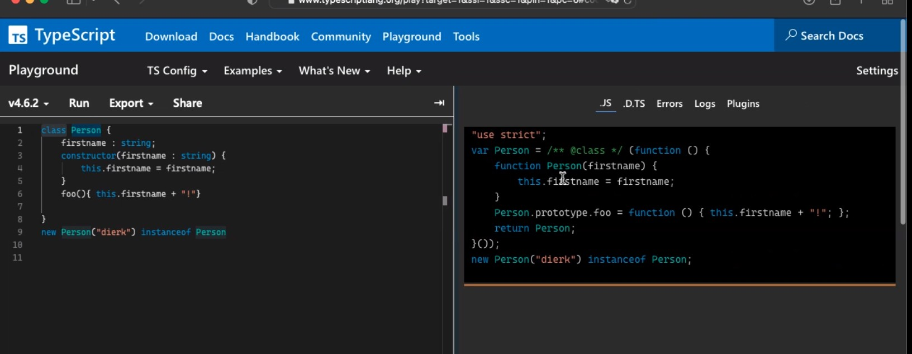

OOP JS
Encoding Objects in JS
1) Open, dynmaic
const good = {
firstname : "Good",
lastname : "Boy",
getName
: function() {
return this.firstname + " " + this.lastname
// here i also need it because firstname is not available as reference in the current scope
// this-binding refers to the left of '.' where it's called
}
};
no safety but super dynamic
unobvious how to share structure
beware of "this"! See Adam Breindl last week.
const store = {
accessor : good.getName // when we store a reference elsewhere
};
ok.push(store.accessor() === "undefined undefined"); // OOPS!
}) ();
// because 'this' is not known here, because the receiver object is now 'store' and the store has no firstname/lastname
// bound on the call side (dynmaically)!!
report("object-literal", ok);
only applies to functions with Function keyword, not to '=>'!!
use => referes to the scope before! () => {this.firstname + " " + this.lastname}
Super dynmaic: add new functions, add/remove new properteis at any time!
2) Closed, explicit
// Using Constructor Function
// working on our closure scope (no one can touch it, no this!)
// returning a new Object, using literal construction
function Person(first, last) {
let firstname = first; // optional
let lastname = last;
return {
getName: function() {
return firstname + " " + lastname }
}}}
// here exposing only the function and refereing to the closure scope
// here wer're only sharing the functions. all of them will have getName property
// best safety, easy to share structure, but no class
// we don't have a class here, don't know. we can not ask if Person is a class...
2) Mixed, classified
// have all benefits, and 'class' :)
// depends on new
// we create our own internal scope
// Why? - because it's the stadnart way. http://www.typescriptlang.org --> check pic

const Person = ( () => { // lexical scope
function Person(first, last) { // ctor, binding
this.firstname = first;
this.lastname = last;
}
Person.prototype.getName = function() {
// value is a function, must use this. keyword
return this.firstname + " " + this.lastname;
// this. referes to object to get name property
};
return Person;
}) (); // IIFE
// immedtiatly call the function, goal: create a own scope
// what is in the scope: function that create Person
// new Person("Good", "Boy") instanceof Person
// new ==> constructs a new empty object, takes this Person (function Constructor, it's also an object) new assigns property Prototype to the empty object
// this will always refere to the key 'new'
// now you can ask it if it's a instanceof Person
// What is Person --> Constructor (not a type like in java), we ask the new Person if it was created by the Person Constructor
Tipps: from Douglas Crockford
I stopped using 'new'
stopped using Object.create
stopped using 'this'
stopepd using 'null'
Prototype
// Classifies objects similar to a "type"
// Manages shared properties
// great power: all objects that are made from a constructor and share a prototype.
// changing the prototype changes the objects all at the same time.
// Prototype itself is an object.
// change it...
Can be checked, e.g. by instanceof
Remember 'New'
Calls the constructor-Function
(cannot be a lambda)!!
Creates a new Runtime-Scope
Sets the prototype
Example, OOPSIE Game